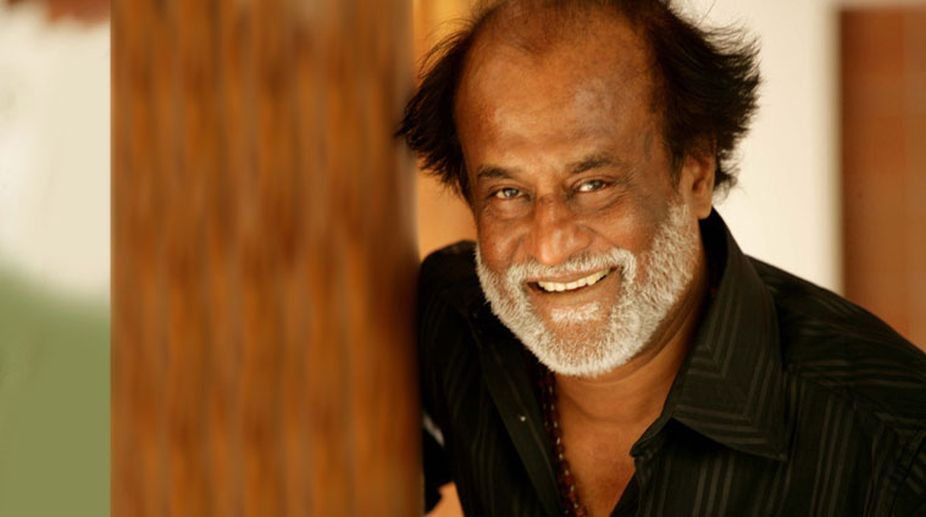

CHENNAI: Actor Rajinikanth today thankedSri Lankan Tamils for their love and affection, days after he cancelled his visit to the island nation following opposition from pro-Tamil outfits.

"I came to know your love for me through the media. I have no words to thank you. Let us think good and only good things will happen," he said in a statement.
Originally on April 9, Rajinikanth was scheduled to hand over 150 new houses built in Jaffna for Tamils by Gnanam Foundation of Lyca Group, a Tamil film production house.
The actor, however, cancelled his visit after various pro-Tamil outfits including the Viduthalai Chiruthaigal Katchi (VCK) objected to it.
Following the cancellation of the actor's visit, the Tamils in Jaffna had taken out a rally in his support.
Expressing optimism, Rajinikanth said he will meet them (Sri Lankan Tamils) when the time is right.
"We will meet at an appropriate time. I pray to god for your well-being," he said.
The VCK yesterday said they were not averse to the actor's visit to meet Tamils after the situation for the minorities improves there.
The outfit's chief Thol Thirumavalavan said an 'all-is-well carnival atmosphere,' being sought to be projected by the pro-government organisers, was inappropriate now when Tamils were struggling for their rights.
He said that Rajinikanth can meet the Tamils any day in Sri Lanka but only after the situation of its various regions affected by the 2009 war improves.